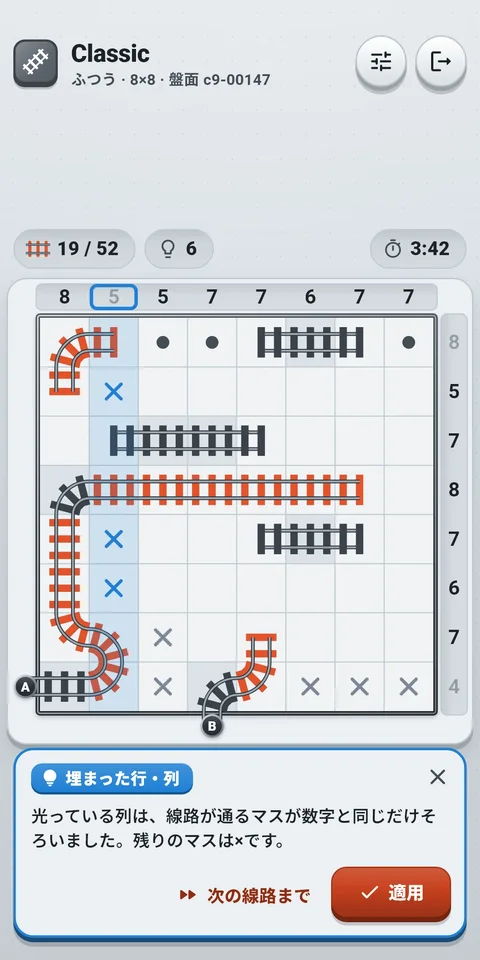
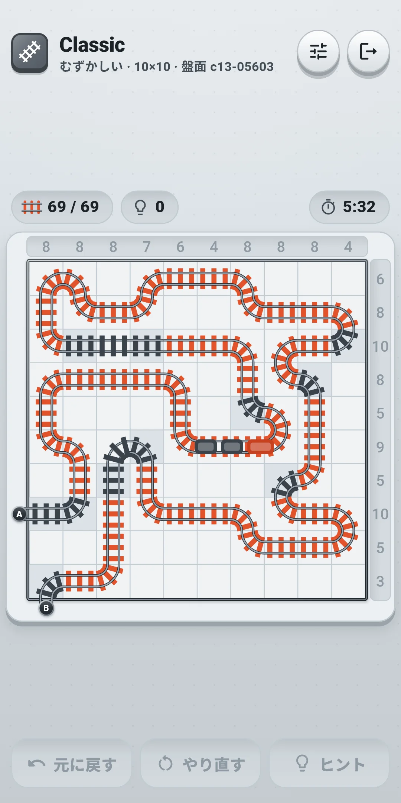
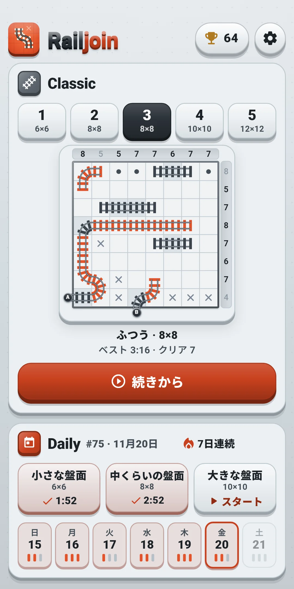
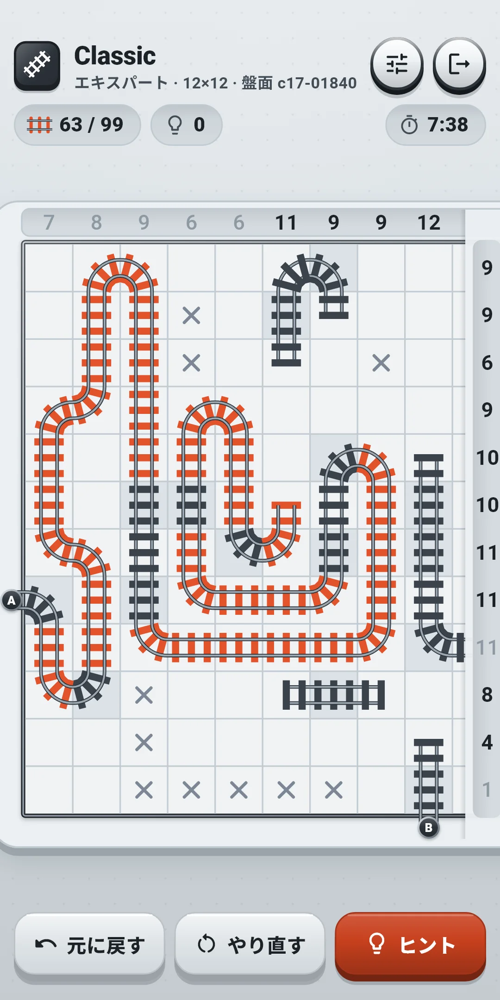
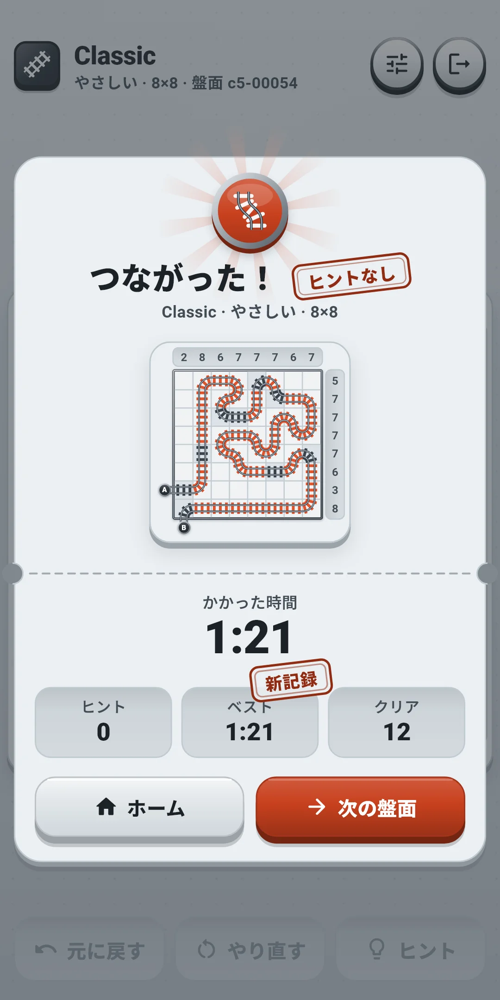
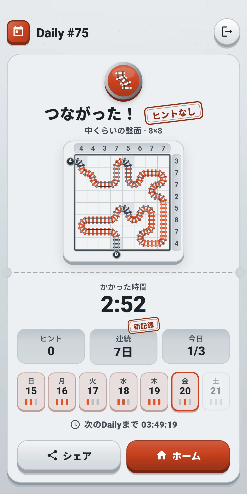
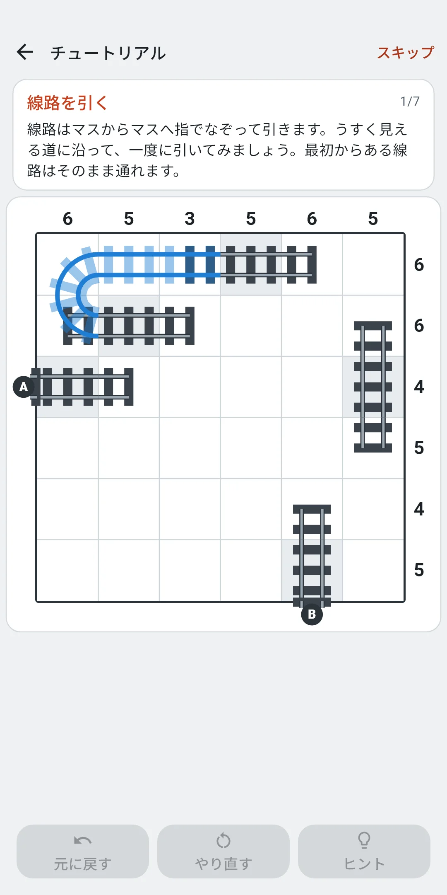

スクリーンショット







アプリについて
| アプリ名 | Railjoin |
|---|---|
| バージョン | 1.0.0 |
| 開発 | Willee Project |
| 対応プラットフォーム | Android |
線路を1本つないで、入口Aから出口Bまで結ぶ論理パズル（線路パズル）です。盤面の上と右にある数字は、その列・行で線路が通るマスの数です。どの盤面も答えは1つだけで、推測なしに論理だけで最後まで解けます。
- ライフはなく、ミスの数も数えません。ヒントは回数無制限で無料、時間制限もありません。
- 会員登録もログインもありません。初めて開くと、6×6の練習用の盤面でルールと操作を覚えるチュートリアルから始まります。スキップでいつでも終えられます。
- インターネットがなくても遊べます。 インターネットは画面下の広告と、利用統計・エラー報告の送信にだけ使います。
- 言語は端末の設定に従います。日本語・英語・韓国語・中国語（簡体字・繁体字）に対応し、設定で直接選ぶこともできます。
1. ルール
- 盤面は正方形のマスが並んでいます。盤面の上には列ごとに、右には行ごとに数字があります。その数字は、その行・列で線路が通るマスの数です。
- 盤面の左に入口A、下に出口Bがあります。線路はAからBまで途切れない1本です。
- 線路が通るマスは、隣り合う2つのマスとつながります（まっすぐ、または曲がって）。分岐も、交差も、閉じたループもなく、斜めにはつなぎません。
- いくつかのマスには、最初から線路が置かれています（最初からある線路のマス）。消したり変えたりできません。AとBに接するマスも、いつも最初から線路があるマスです。
- AからBまで線路が1本につながり、それ以外に線路がなく、すべての行・列の数字が合えばクリアです。×と●はすべて置かなくてもかまいません。
- どの盤面も答えは1つだけで、推測なしに論理だけで最後まで解けます。推測しないと決められないマスが出てくる盤面は出ません。
- ライフはなく、ミスは数えません。間違ってつないでも盤面は続き、「元に戻す」は何回でも使えます。
- ベストタイムはヒントなしでクリアした盤面だけを数えます。 ヒントなしで解くと、結果にヒントなしのスタンプが押されます。
盤面の見方
- 数字は盤面の上（列）と右（行）にあります。入口Aは盤面の左の外側に、出口Bは盤面の下の外側に、丸い札で表示されます。
- 最初からある線路のマスは、床の色が違い、線路がすでに置かれています。最初からある線路は枕木の色が違うので、枕木が朱色の、自分で置いた線路と見分けられます。
- ×は「このマスには線路が通らない」という自分用の印、●は「このマスには線路が通る（向きはまだわからない）」という自分用の印です。解くのに必須ではありませんが、わかったことを印にしておくと、残りのマスが見やすくなります。
- ある行・列で線路が通るマスが数字と同じ数になると、その数字が薄くなります（●も線路が通るマスとして数えます）。最初からある線路だけで数字がそろっている行・列は、最初から薄く見えます。
- ルール違反（最初はオン）: 数字を超えた行・列は数字に赤い枠が付き、分岐したマスと閉じたループは線路が赤くなってマスに赤い枠が付きます。ルールだけを見て知らせ、答えは見ません。
- 淡い青で色付けされた行・列、点線の輪で囲まれたマス、点線は、ヒントが指しているところです。間違った印は赤い枠で指します（4章）。
2. 解き方のコツ
チュートリアルは、6×6の盤面1つで基本を教えます。線路を引く → ×を置く → ●を置く → ルール違反 → 元に戻す → ヒント → 自分でつなぐの7段階で、段階ごとに操作する場所を光らせ、光っているところだけが反応します。チュートリアルの盤面は記録に入らず、最後まで終えてはじめるを押すとホームに進みます。ヒントは使った考え方を名札で教えます。やさしいものから順に、次のとおりです。
- 行き先が2つだけ: 線路が通るマスで、線路が出られる辺（開いている辺）が2つだけなら、その2方向へつながります。
- 行き止まり: 開いている辺が2つ未満のマスには、線路は通れません。そのマスは×です。
- 埋まった行・列: 線路が通るマスが数字と同じ数になった行・列の残りのマスは、すべて×です。
- 残りはすべて線路: 行・列の数字に届くのに残りのマスがすべて必要なら、残りのマスはすべて線路が通ります（●）。
- ループ防止: 同じ線路の両端をつなぐと閉じたループになるので、その間はつなぎません。
- 早すぎる完成の防止: 入口側の線路と出口側の線路をつなぐと、AからBまでの道が完成してしまいます。それで数字がすべて合うときだけつなぎ、まだ合わないときはつなぎません。
- 横断の偶奇: 線路は、盤面を横切る1本の線（隣り合う2つの行・列の間）を横切るたびに反対側へ移ります。AとBがその線の反対側にあれば奇数回、同じ側にあれば偶数回横切ります。横切れる場所が1つしか残っていないとき、ここまでに横切った回数が偶数か奇数かで、そこを横切るかどうかが決まります。
- 隣接マスの推論: 隣のマスまで考えます。開いている辺が2つだけのマスに線路が通ると隣のマスまでつながって行・列の数字を超えてしまうなら、そのマスは×です。逆に、あるマスを空けると隣のマスがふさがって、その行・列で線路が通れるマスが数字より少なくなるなら、そのマスは線路が通ります（●）。
入門とやさしいは、最初の4つ（行き先が2つだけから残りはすべて線路まで）で解けます。ふつうはループ防止と早すぎる完成の防止まで、むずかしいは横断の偶奇まで、エキスパートは隣接マスの推論まで必要な盤面が出ます。難しい考え方は、ヒントが理由といっしょに教えてくれます（4章）。
3. 操作
- 線路を引く: 1本の指でマスから隣のマスへなぞると、2つのマスの間に線路がつながります。指が隣のマスの真ん中の四角（マスの幅の70%）に入ると、そのマスまでつなぎます。マスの境目で指が揺れてもまちがってつながらず、速くなぞって飛ばしたマスは、指が通ったマスで埋めます。1回のなぞりで何マスもつなげます。斜めにはつなぎません。
- なぞり戻し: つなぐ途中で、いま引いた道をなぞり戻すと、置いたばかりの線路が消えます。
- 線路を消す: すでに自分で置いた線路の上からなぞり始めると、つなぐ代わりに、その線路をたどって消していきます。消しながらなぞり戻すと、消した線路が元に戻り、最初のマスまで戻ると何もしなかったなぞりになります。線路の端につなごうとして、指が端のマスの1つ手前に触れたときも、端のマスを通り越して空きマスへなぞれば、線路は消さずに端のマスからつながります。
- 進めない場所: ×を置いたマス、最初からある線路のマスで線路が通らない辺、盤面の外周は越えられません。最初からある線路はたどって通れ、消えることはありません。●を置いたマスはふさぎません。
- なぞっている間の表示: いまのマスに指より大きな輪が出て、そのマスの行と列がうっすら光り、その行・列の数字に枠が付きます。このなぞりで置いた線路は別の色で表示されるので、指に隠れてもどこまでつないだかわかります。
- ×と●を置く: 空きマスをタップするたびに、× → ● → 消すと変わります。線路が通るマスや最初からある線路のマスには置けません。×を置いたマスには線路を置けません。
- 元に戻す: 盤面の下の元に戻すで、最後にしたことを取り消します。回数に上限はなく、1回のなぞり、×・●を置く1回、ヒントの適用1回が、それぞれ「元に戻す」1回で戻ります。アプリを閉じて開き直しても、「元に戻す」は続きます。
- 拡大・移動: 2本の指を広げたりつまんだりして拡大・縮小し、2本の指をそろえて動かして移動します。1本の指では盤面は動かず、いつも線路を引く・タップするために使います。2本目の指が触れると、引いていたなぞりはなかったことになり、すべての指を離すまで、ほかの操作は受け付けません。そのため、拡大しようとした指が線路を引いたり×を置いたりすることはありません。
- マスが小さくなる盤面: 盤面全体を表示するとマスが小さすぎる盤面（多くのスマホではエキスパートの12×12、画面が狭いスマホではむずかしいの10×10も）は、拡大して開きます。入口Aのほうから見え、2本の指でつまむと盤面全体が見えます。拡大したままなぞっていて指が画面の端に触れると、盤面が自動でそちらへ動きます。上と右の数字は、拡大して動かしても画面の端にくっついてついてきます。入口・出口の札は盤面といっしょに動きます。
- 押して拡大: 盤面を縮めてマスが小さく見える間（1マスが約5mmより小さいとき）は、見るだけです。1本の指で押して離すと、触れていた場所が0.35秒かけてゆっくり大きくなります。線路を引く、×・●を置くのは、大きくなった盤面で行います。エフェクトを減らすをオンにしていると、動かずにすぐ大きくなります。
- 線路をつなぎ終えると、盤面全体が見える状態になり、光がAからBまで走ったあと、小さな列車が線路に沿って走ってから、結果が出ます。待ちたくないときは盤面を押すと、すぐ結果に進みます（完成の列車をオフにするかエフェクトを減らすをオンにすると、列車なしですぐに出ます）。
画面上部のバーの左には、モードの絵とタイトル（Classic、Daily #12）があり、その下に小さな字でレベル・盤面の大きさ・盤面の番号が出ます（Dailyは盤面の種類・盤面の大きさ・盤面の番号）。右にはクイック設定ボタンと、いちばん端にドアの形の戻るボタンがあります。盤面のすぐ上の枠の列には、左から線路のマスの数（両側ともつながったマス / 答えの線路のマス）と使ったヒントの数が出て、右端に時間が出ます（設定の時間を表示で隠せます）。
| ボタン | すること |
|---|---|
| クイック設定 | 演出とアシスト機能（5章・8章）をゲーム画面のまま変えられる画面を開きます。下に引くか、外側を押すと閉じます |
| 戻る（ドアの形） | ホームに戻ります。解いている盤面は自動で保存されます |
盤面の下のツールバー:
| ボタン | すること |
|---|---|
| 元に戻す | 最後にしたことを取り消します。取り消すものがないときは薄く表示されて押せません |
| やり直す | この盤面を最初からと新しい盤面を選ぶ画面を開きます（下） |
| ヒント | 次の一手を理由といっしょに教えます（4章）。ヒントを使うと、ヒント 3のように数が付きます |
やり直す画面:
| 選ぶもの | 内容 |
|---|---|
| この盤面を最初から | 置いた線路と×・●をすべて消し、「元に戻す」の記録も空にします。Classicは時間・ヒントも最初から数え、Dailyはその日の時間・ヒントをそのまま数えます。まだ手を付けていない盤面では薄く表示されて押せません |
| 新しい盤面（Classic） | この盤面をやめて、同じレベルの別の盤面を解きます。やめた盤面はクリアに数えません。Dailyにはありません |
4. ヒント
ヒントボタンが、解き方の次の一歩を理由といっしょに教えます。ヒントは回数無制限で無料です。吹き出しは下のツールバーの場所に出て、ツールバーをいったん隠します。吹き出しがヒントの指すマス・行・列・数字を隠してしまうときは、盤面の上のほうへ移り、そのときはツールバーがまた見えます。
ボタンを順に押します。ヒント → もっと見る → 適用です。
- 1段目: ヒントを押すと、見る場所だけを教えます。根拠になる行・列には淡い青の色が付いてその数字に枠が付き、根拠になるマスには点線の輪が付きます（横断の偶奇では、盤面を横切る点線が引かれます）。吹き出しの名札は使った考え方です（2章）。例:「光っている行の数字と、線路が通るマスを比べてみましょう。」
- 2段目: もっと見るを押すと、決める場所が盤面に淡く表示されて、理由が出ます。置く線路は淡い線路、置く×・●は淡い×・●、つながない辺は短い棒で表示されます。理由には行・列の番号を使わず、光っている場所を指して説明します。例:「光っている行は、線路が通るマスが数字と同じだけそろいました。残りのマスは×です。」
- 3段目: 適用を押すと、そのとおりに線路を置くか×・●を置きます。「元に戻す」1回で戻ります。
- 次の線路まで（2段目で）: 次に線路を置く段階の手前までの×・●をまとめて置き、すぐに次の線路を置く段階の理由を見せます。「元に戻す」1回で戻ります。
- 間違った印があれば、それから教えます（名札間違った線路、間違った×、間違った●）。答えにない線路、答えの線路のマスに置いた×、答えにないマスに置いた●を、先に置いたものから指摘します。すぐ2段目になり、適用を押すとその印を消します。
- 盤面にまだ見えていない前の段階があるときは、理由の前に「まず：…」としてその理由を付けて教えます。
- ヒントは、最初からある線路のマスと、自分が引いた正しい線路だけを根拠に考えます。自分が置いた×・●は根拠に使わないので、×・●を1つも置いていなくても、間違っていても、ヒントは常に正しいです。すでに自分の盤面で全部見えている段階は飛ばします。
- 使ったヒントの数は、ヒントボタンと盤面のすぐ上の枠、結果に残り、Dailyのシェアの文にも入ります。ヒントを頼んだとき（1段目）に1回と数えます。もっと見る・適用・次の線路までは別に数えず、閉じてからもう一度頼むと1回増えます。
- 吹き出しの閉じるボタン（Xの形）を押すと、ヒントは閉じます。盤面に線路・×・●を置いたときや、「元に戻す」を押したときも閉じます。
5. アシスト機能
設定のアシスト機能のグループでオン・オフします。ゲーム中はクイック設定ですぐに変えられます。
- ルール違反を表示（最初はオン）: 数字を超えた行・列、分岐したマス、閉じたループを示します（1章）。
- ミスをすぐ表示（最初はオフ）: 答えと違う線路、答えの線路のマスに置いた×、答えにないマスに置いた●に、赤い丸の中に×を付けてすぐ示します（ヒントの「間違った印」と同じ3つです）。オフのときは、間違った印はヒントが指摘するまで教えません。オンにして解いた盤面も、ヒントを使っていなければヒントなしと数え、ベストタイムに入ります。
- 時間を表示（最初はオン）: 盤面のすぐ上の枠の列の右端に時間を表示します。オフにしても時間は数え続けます。解いた盤面のかかった時間は結果に出ます。
チュートリアルの盤面では、設定にかかわらずルール違反を表示し、ミスをすぐ表示は使いません。
6. モード
ホーム
上にアプリのアイコンと名前があり、右にトロフィーとクリアした盤面の数が出る記録ボタン、歯車の形の設定ボタンがあります。その下にClassicカードとDailyカードが順に並びます。チュートリアルは、設定のアシスト機能のグループでもう一度できます（8章）。
Classic — レベルを選ぶ、時間制限なし
- ホームのClassicカードでレベルを選び、下の大きなボタン（スタート、途中の盤面があれば続きから）を押します。5つのレベルのタイルにはレベルの番号（1〜5）と盤面の大きさがあり、選んだレベルは濃い色になります。その下の盤面のプレビューには、途中の盤面か次の盤面の空の状態が出て、横にスワイプすると隣のレベルに移ります。その下にレベルの名前と盤面の大きさ、ベストタイム（ヒントなしで解いた盤面だけ）とクリアした盤面の数が出ます。初めてなら入門（1）がおすすめです。
- レベルは盤面の大きさと、解くのに必要ないちばん難しい考え方（2章）で分かれます。レベルは最初からすべて選べて、レベルごとに盤面が2,000個あります。
| レベル | 盤面の大きさ | 必要ないちばん難しい考え方 |
|---|---|---|
| 入門 | 6×6 | 最初の4つ（行き先が2つだけ〜残りはすべて線路） |
| やさしい | 8×8 | 最初の4つ |
| ふつう | 8×8 | ループ防止、早すぎる完成の防止 |
| むずかしい | 10×10 | 横断の偶奇 |
| エキスパート | 12×12 | 隣接マスの推論 |
- まだ解いていない盤面の中からランダムに出ます。解いた盤面は出ず、そのレベルの盤面をすべて解いたら、いちばん前に解いた盤面からまた出ます。
- 盤面をつなぎ終えると、完成の音と振動（オンのとき）が出て、小さな列車がAからBまで走ってから、結果カード（つながった！）が出ます。つなぎ終えた盤面の絵、かかった時間、ヒント、ベスト（ヒントなしで解いた盤面だけ。前の記録を超えると新記録のスタンプ）、クリアした盤面の数が出ます。ヒントなしで解くとヒントなしのスタンプが押されます。次の盤面を押すと同じレベルの次の盤面に進み、ホームを押すとホームに戻ります。
- 解いている盤面は自動で保存されます。抜けても、アプリを閉じて開き直しても、レベルごとに続きから解けます。時間は盤面の画面を開くと進み、アプリを離れている間や画面を離れている間は進みません。手を付けずに抜けた盤面は、時間も残さず、そのまま待っています。
Daily — 今日の盤面3つ
- 毎日、全員が同じ3つの盤面を受け取ります。小さな盤面（6×6）、中くらいの盤面（8×8）、大きな盤面（10×10）で、難しさはそれぞれ入門・ふつう・むずかしいのレベルと同じです。世界中のみんなが同じ日に同じ盤面を解きます（端末の日付が基準）。新しいDailyは端末の時刻で午前0時に開き、アプリを開いたまま午前0時を過ぎると、ホームが自動で新しい日に切り替わります。
- 盤面ごとに別々に解き、結果も盤面ごとに残ります。ルールはClassicと同じです（ライフはなく、ヒントは無制限）。
- 時間制限はなく、これまでにかかった時間が盤面の画面の上に出ます（設定で隠せます）。
- その日のうちなら、抜けても続きから解けます。この盤面を最初からにしても、その日の時間・ヒントはそのまま数えます（やり直す画面にはこれだけがあります）。日付が変わると、解きかけの前日の盤面は消えて、新しい盤面が開きます。
- その日の3つの盤面のうち1つでもクリアすれば、その日が連続につながり、1日空けると途切れます。
- ホームのDailyカードには、Dailyの番号と今日の日付、連続の日数（🔥）、今日の3つの盤面、今週の7日分の枠が出ます。盤面のタイルには、盤面の名前・大きさと状態（スタート、続きから、解いた盤面は✓とかかった時間）が出て、押すと盤面を解くか、解いた盤面の結果が見られます。今週の枠には、曜日と日付、その日の3つの盤面を表す枕木が3本あります。解いた盤面の枕木は朱色になり、今日の枠には朱色の縁が付きます。
- 結果画面には、つなぎ終えた盤面の絵、かかった時間、ヒント、連続（日数）、今日解いた盤面の数（例: 2/3）、今週の7日分の枠、次のDailyまでの時間が出ます。ヒントなしで解くとヒントなしのスタンプが押され、いま解いた盤面で最長の連続を超えると、連続のところに新記録のスタンプが押されます。シェアで結果を送れます（盤面ごとに別々）。例:
Railjoin Daily #12 · 中くらいの盤面 ✅ 3:41 ヒント 0回 🔥 5日連続
#12はDailyの番号で、その隣は盤面の種類とかかった時間（分:秒。1時間を超えると時:分:秒）です。1行目の「Railjoin Daily」はどの言語でも同じです。2行目はヒントの数、3行目は連続記録です（2日以上のときだけ）。盤面の絵は答えがわかってしまうので入れません。番号は最初のDailyが開いた日が#1で、1日ずつ増えるので、番号と盤面の種類が同じなら同じ盤面です。
7. 記録
ホーム右上のトロフィーの形の記録ボタンで開きます（ボタンにはクリアした盤面の数も出ます）。
- いちばん上: ClassicとDailyを合わせたクリアした盤面の数と、モードごとの数
- Daily: 連続、最長の連続、クリア日数、クリアした盤面の数。1日空けると連続は途切れます。
- Classic: レベル（と盤面の大きさ）ごとのクリア数、ヒントなしでクリアした数、ベストタイム（ヒントなしで解いた盤面だけ）、平均タイム（クリアしたすべての盤面）。まだクリアした盤面がないレベルの時間は「-」です。
8. 設定
ホーム右上の設定（歯車）で開きます。グループは3つです。ゲーム中はクイック設定ボタンで、前の2つのグループをすぐに変えられます。
音と演出
| 項目 | 内容 |
|---|---|
| 効果音 | 線路をつなぐ・消す、離れた部分がつながる、×・●を置く・消す、行・列の数字がそろう、ルール違反、ヒント、元に戻す、盤面の完成、走る列車、結果、ボタンの音をオン・オフします |
| バイブレーション | 線路をつなぐときは短く、消すときや×・●を置くときはもっと軽く、行・列の数字がそろうと2回、ルール違反は短く重く2回、盤面をつなぎ終えると長く震えます。ボタンを押したときも軽く震えます。オン・オフします |
| エフェクトを減らす | すべての演出をまとめて控えめにします。オンの間は、下のつなぐときの光、完成の列車、切符の紙吹雪はオフと同じになり（スイッチは押せず、値はそのまま残ります）、押して拡大も動かずにすぐ大きくなります |
| つなぐときの光 | 線路をつないだマスが一瞬光り、つなぎ目に火花が散ります。部分がつながるとき、行・列がそろうとき、盤面をつなぎ終えたときの光もまとめてオン・オフします。最初はオンです |
| 完成の列車 | つなぎ終えると、結果の前に列車がAからBまで走ります。オフにすると結果がすぐに出ます。最初はオンです |
| 切符の紙吹雪 | 結果画面に切符のかけらが3回はじけて舞います。最初はオンです |
盤面全体が揺れる演出はありません。
アシスト機能
| 項目 | 内容 |
|---|---|
| ルール違反を表示 | 数字を超えた行・列、分岐、閉じたループを示します。最初はオンです |
| ミスをすぐ表示 | 答えと違う線路と×・●にすぐ印を付けます。最初はオフです |
| 時間を表示 | 盤面のすぐ上の枠の列に時間を表示します。最初はオンです |
| チュートリアルをもう一度 | チュートリアルをもう一度行います。練習用の盤面は記録に入らず、終えるかスキップすると設定に戻ります。クイック設定にはありません |
一般
| 項目 | 内容 |
|---|---|
| 言語 | 端末の言語に従う（最初の設定）か、一覧（English・日本語・한국어・简体中文・繁體中文）から選びます |
| プライバシー設定 | 広告の同意画面をもう一度開きます。同意が必要な地域（ヨーロッパなど）でだけ表示されます |
| このアプリについて | バージョン、この説明書（遊び方）、プライバシーポリシー、オープンソースライセンス |
画面の色は、端末のダークモードの設定に従います。アプリの中に切り替えのスイッチはありません。
9. 広告と記録の保管
- 画面のいちばん下にバナー広告が1本入ります。盤面の画面では、ツールバーと広告の間をあけて、広告をまちがって押さないようにしています。チュートリアルでは広告を外し、場所だけ空けておきます。広告はこの1本だけです。ゲームはインターネットがなくても遊べ、インターネットは広告と利用統計・エラー報告にだけ使います。
- 同意が必要な地域（ヨーロッパなど）では、初めて開いたときに広告の同意画面が出ます。あとで設定のプライバシー設定から変えられます。
- アプリ内で支払うものはありません。
- 記録と設定は端末の中に保存されます。端末のGoogleバックアップ（Androidの自動バックアップ）がオンなら一緒にバックアップされ、端末を替えても続きから遊べます。アプリを削除すると端末の記録も消えます。
- 詳しくはプライバシーポリシーをご覧ください。